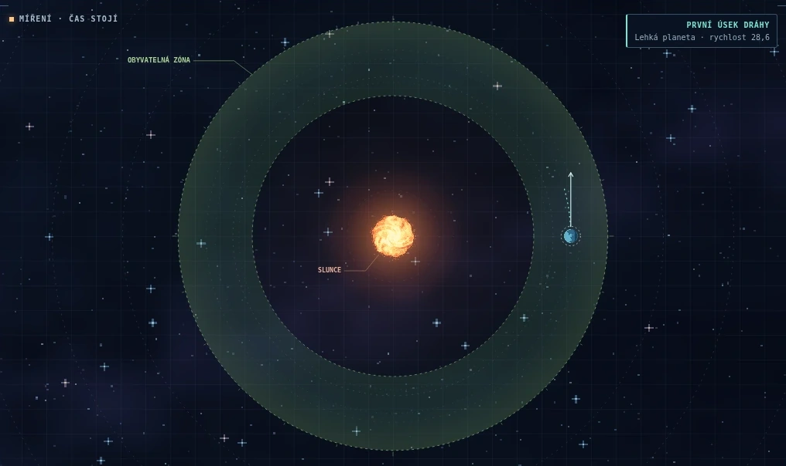
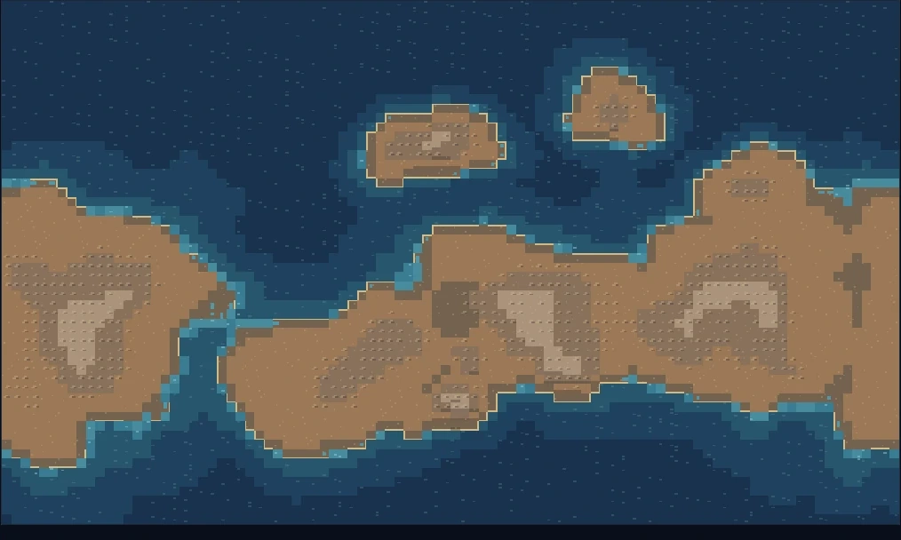
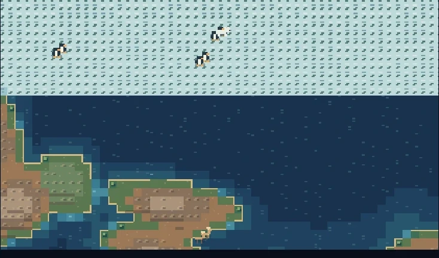
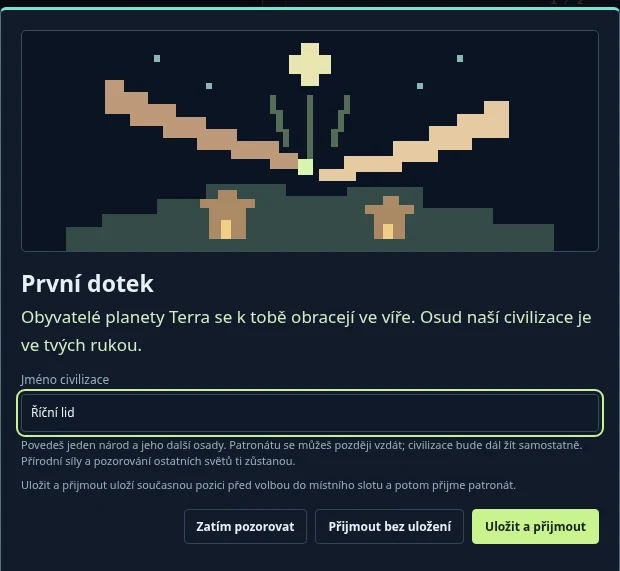
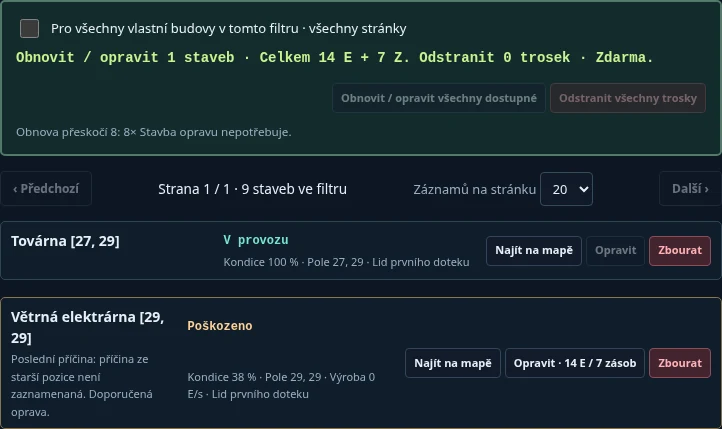
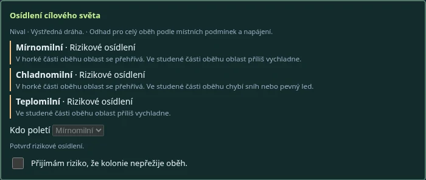
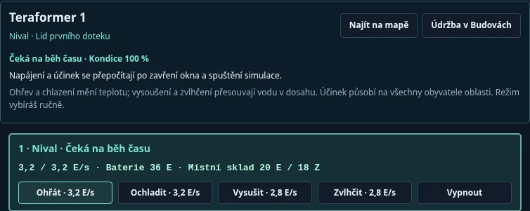
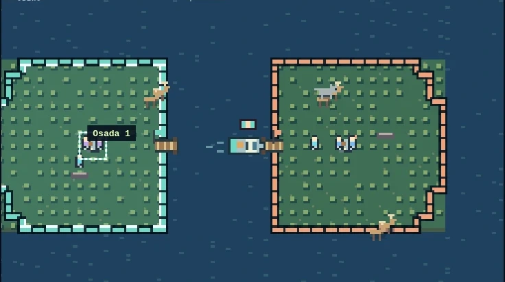

Vytvoř svět a vypusť ho na dráhu
Pohledy a dráha Úpravy HUDu Proč osada strádá Planetární projekty
V pohledu Soustava otevři dlaždici Tvorba planet a hody . V Nastavení nové planety vyber podmínky a případně vyplň Název planety . Prázdné pole ponechá automatický název. Klikni na Vypustit planetu . Podrž levé tlačítko myši u modré planetky, táhni po šipce a pusť. Na dotykové obrazovce totéž udělej prstem.

Ukázka míření na mapě soustavy. Zvětšit snímek ↗︎
Směr tahu určí směr startu. Delší tah zvýší rychlost. Před puštěním sleduj předpověď dráhy. Mimo režim vypuštění tahem posouváš mapu. Už vypuštěný svět přejmenuješ tužkou u názvu v seznamu planet nebo nad povrchem.Mladý svět začíná před vznikem mikrobů. U staršího světa můžeš začít se zvěří, kmenovou, městskou nebo moderní érou. Podmínky dál rozhodují, zda vznikne a vydrží osídlení. Urychlený přírodní vývoj zkrátí čekání na další etapy.V dlaždici Gravitace a pásma vyber pomocnou zónu podle podnebného profilu. Výběr zvýrazní doporučené pásmo. Profil nové planety určuje její vlastní nastavení. Volná gravitace umožňuje planetám vzájemně měnit dráhy. V obou režimech mohou křížící se dráhy vést ke srážce.
Ovládání klávesnicí
Při míření mění Q a E směr, + a − sílu. Enter vypustí planetu a Esc míření zruší. Šipkami při míření posuneš místo startu. Mimo míření šipkami posuneš mapu, + a − upraví přiblížení a Home ukáže celou soustavu.
Pozoruj a tvaruj povrch
V Soustavě otevři roletku Planety nad mapou a vyber svět. Můžeš také přepnout přímo do pohledu Planeta , který ukáže povrch právě vybraného světa. Do soustavy se vrátíš horní záložkou, tlačítkem ← Soustava u mapy nebo ze Stavu planety .

Ukázka terénu na mapě povrchu. Zvětšit snímek ↗︎
Dlaždice Božské síly a Úprava krajiny najdeš v pohledech Planeta i Civilizace. Jsou dostupné bez patronátu.
Vítr spustíš tahem ve směru, kterým mají mraky plout. Teplo nebo Chlad použiješ podržením na mapě. Mění teplotu, led a dostupnost vody.Koryto a Val kreslíš tahem. Mění výšku terénu a tím směr toku. Volbou Dosah upravíš velikost zásahu.Pramen a Sopku zapneš kliknutím na místo. Pramen přidává vodu, sopka působí teplem a lávou. Dalším kliknutím na zdroj stejným nástrojem jej vypneš.
Vyber pohled a přečti stav planety
Záložka Galaxie zobrazí v hlavní mapě hvězdy obíhající kolem středu galaxie. Vyber soustavu na mapě, šipkami nebo v roletce s názvem aktuální soustavy. Dovnitř vstoupíš tlačítkem Otevřít soustavu . Stav soustavy ukazuje obyvatele, civilizace, počet planet i počet obydlených planet. Jeho šipky na kartě Soustava přepnou otevřenou soustavu. Kalendář se rozběhne po vypuštění první planety nebo vytvoření soustavy s počátečními planetami. Potom čas běží i při prohlížení galaxie. Rychlost 1×, 4× nebo 12× a tlačítko pauzy platí pro celou galaxii.
Tvorba a odstranění soustav
V levém panelu Správa soustav můžeš zadat jméno a počet počátečních planet od 0 do 18. Při nule bude soustava prázdná. Nová hvězda se objeví na mapě a hra ji vybere.
Vyber soustavu na mapě nebo v roletce, rozbal Přejmenovat vybranou soustavu , uprav název a klikni na Uložit název . Každá soustava má v galaxii jedinečný název.
Vyber vedlejší soustavu, rozbal Odstranit vybranou soustavu a potvrď odstranění. Zaniknou i její planety a civilizace. Výchozí soustava je chráněná.
Galaxie pojme omezený počet soustav. Přes Uložení uložíš celou galaxii.
Soustava Vypouštění planet, gravitace a mapa drah. Šipky u mapy vybírají planetu v soustavě. Kliknutím na planetu v roletce otevřeš její povrch. Roletka s názvem vybrané planety porovnává teplotu, dobu oběhu při 1×, počet obyvatel, podíl zeleně a stav vlastních planetárních projektů. Seznam i šipky řadí planety od vnitřních drah k vnějším podle průměru nejbližší a nejvzdálenější vzdálenosti od hvězdy. Únikové dráhy jsou za uzavřenými oběhy.
Planeta Stav planety ukazuje průměrnou teplotu, dobu oběhu, obyvatele, sídla a zeleň. Šipkami v panelu přepneš planetu. Oranžová Upozornění planety nad mapou sledují dráhu, počasí, přírodu a dopady na zobrazeném světě. Upozornění s odkazem zaměří konkrétní místo. Roletka u mapy a panel Civilizace na planetě vybírají místní národ. V panelu i v roletce můžeš civilizaci přejmenovat a přijmout nebo ukončit patronát.Civilizace Na kartě Civilizace roletka u mapy vybírá civilizaci na právě zobrazené planetě. Vedlejší roletka a šipky vybírají osadu této civilizace na téže planetě. Panel Stav osady ukazuje obyvatele, jednotky, jídlo, místní sklad a průběh práce. M panelu otevřeš podrobnosti, zaměříš osadu nebo zadáš rychlý pokyn vlastní osadě. Ve Stavu civilizace šipkami přepínáš civilizace a vidíš jejich zdroje a obyvatele v celé soustavě. Lidé na cestě jsou uvedeni zvlášť. Tlačítko Najít na mapě zaměří osadu. U vlastních sídel najdeš v podrobnostech pokyny a přejmenování. U vlastního národa najdeš postup výzkumu, tlačítko Zadat výzkum a kroniku přímo ve Stavu civilizace . Oranžová Upozornění patronátu sledují vlastní osady v celé soustavě, jejich ohrožení a nedávné změny osídlení. Kliknutím na upozornění s odkazem se přesuneš na místo, i když leží na jiné planetě.
Dopady vesmírných těles
Dosah od středu dopadu je 7 polí u běžného asteroidu, 9 u komety a 10 u velkého asteroidu . Škody slábnou směrem od kráteru. Kometa může na suché souši založit několik ohnisek požáru. Velký asteroid může ovlivnit podmínky i mimo místo dopadu. Obří asteroid může planetu zničit.
Jak číst dráhu a teplotu
Dráha v zelené zóně Celý oběh je uvnitř zvoleného pomocného pásma. Život pořád závisí na vodě, teplotě a dalších podmínkách přímo na povrchu.
Výstředná dráha / Dočasně mimo zónu Oběh prochází pásmem jen zčásti. Podmínky se během oběhu mění. Před kolonizací zkontroluj také teplou a studenou část oběhu.
Příliš blízko Slunci / Studená dráha Dráha zůstává příliš blízko Slunci nebo za vnější hranicí pásma. Vhodnější dráhu nejsnáze získáš novým hodem. Teplo, chlad a teraformery působí na povrch.
Hrozí pád do Slunce / Úniková dráha Svět může zaniknout u Slunce nebo opustit soustavu. U neuzavřené dráhy může přehled zobrazit Bez oběhu . Při dalším hodu sleduj předpověď a vyhni se křížení drah.
Poloha na dráze · Horké, Mírné, Chladné pásmo Ukazuje aktuální vzdálenost vůči mírnému pásmu. Průměrná teplota je údaj z celého povrchu. Pro konkrétní osadu nebo druh sleduj jeho místní podmínky.
Orbitální dohled Ve Stavu soustavy shrnuje varování o drahách a blížících se událostech. Při varování zkontroluj mapu a dráhu dotčené planety. Na planetách počítá obyvatele na světech, Na cestě cestující mezi nimi.
Uspořádej si herní rozhraní
V horní liště vyber Upravit rozložení . Dlaždice včetně mapy pak můžeš přesouvat a měnit jejich velikost.
⠿ Mapa ◢
⠿ Stav planety ◢
↓ Náhled cíle
Schéma. Druhá dlaždice se vejde vedle mapy a pod ní zůstává prostor pro další panel.
Přesun. Chyť dlaždici za ⠿ . Táhni do volného místa nebo k okraji sousední dlaždice. Můžeš se přichytit zleva, zprava, shora i zespodu, pokud je pro danou polohu dost místa na šířku. Zelený obrys ukazuje cílovou polohu. Červený obrys znamená, že tam dlaždici nelze pustit. Při přichycení se překážející dlaždice posunou níž.Velikost. Táhni za ◢ v pravém dolním rohu. Šířku a výšku upravíš stejným tahem. Tlačítka − a + mění výšku. U horního či dolního okraje okna se při přesunu dlaždice stránka sama posouvá.Viditelnost a zamknutí. Viditelnost nastavíš zaškrtávátky v editoru nebo křížkem na dlaždici. Při editaci zůstávají dlaždice daného pohledu dostupné. Klikni na Hotovo a hra použije uložený výběr. Mapa zůstává součástí rozhraní.
Předvolby a obnova Vyvážené , Tvůrce a Strategie rozmístí dlaždice znovu. Obnovit rozložení vrátí výchozí nastavení. Původní zobrazení vypne mřížku. Zapneš ji znovu tlačítkem Upravit HUD .Uložení a přenos Rozložení se ukládá v prohlížeči. Pozice a velikosti jsou samostatné pro Soustavu, Planetu a Civilizaci. Na úzké obrazovce se dlaždice řadí pod sebe a mají vlastní uspořádání. Tlačítka Exportovat JSON a Importovat JSON přenášejí nastavení HUDu. Rozehranou pozici spravuje tlačítko Uložení .
Úpravy klávesnicí
Zaměř úchyt ⠿ a posouvej dlaždici šipkami. Na úchytu ◢ šipky mění rozměry. Esc ruší rozpracované tažení.
Podmínky pro život se liší
Zvířata hledají potravu a vhodné prostředí. Na ledě můžeš najít tučňáky a lední medvědy, v poušti velbloudy, na pastvinách jeleny a v džungli tapíry. Ve Stavu planety najdeš počty skupin ve třech kategoriích. Souš zahrnuje běžnou i teplomilnou suchozemskou zvěř, Chlad chladnomilné skupiny a Voda vodní a pobřežní. Varování o klimatu nebo nedostatku potravy se týká jen části dané skupiny.

Ukázka života na pevném ledu. Zvětšit snímek ↗︎
Chladnomilní osídlují přednostně vhodnou chladnou souš. Mohou také lovit, pěstovat plodiny a stavět na pevném ledu. Tenký nebo tající led se může propadnout.Teplomilní snášejí vedro a sucho, škodí jim podmáčení. Všichni potřebují potravu a svůj podnebný profil si nesou i do kolonií.Dlouhodobé podmínky zvýhodňují určité dědičné varianty. Izolovaná populace se může postupně vyvinout ve vlastní větev.
V dlaždici Život a evoluce rozbal Život a kronika . Najdeš tam vývojová stadia, populace a jejich vystavení podmínkám, měření klimatu i události o životě.
Co znamená stav evoluce
Evoluce pokračuje / Vývoj čeká na vhodné prostředí Sleduj vodu, led, vegetaci a srážky. Podmínky se mění během oběhu a mohou vývoj urychlit, zpomalit nebo dočasně zastavit.
Vývoj ke kmenům / Kmeny čekají na obyvatelné místo Ukazatel se objeví v etapě zvěře. Stáda se vyvíjejí, když mají potravu a vhodné prostředí. I při 100 % mohou kmeny čekat na místo vhodné k osídlení.
Přežití a obnova života Dlouhý mráz či sucho mohou vrátit biosféru do dřívější etapy. Zlepší-li se podmínky, mohou přeživší populace nebo noví mikrobi zahájit další vývoj.
Vyber civilizaci, které chceš pomáhat
Ve Stavu civilizace klikni na Přijmout patronát nebo v Hlavní správě na Vybrat patronát . K osadě se dostaneš i nástrojem Národy a kliknutím na sídlo na mapě.

Zvětšit snímek ↗︎
Přijetím patronátu získáš přístup k pokynům své civilizace a můžeš ji pojmenovat.
Civilizace se rozvíjí i bez tvých pokynů. V Soustavě můžeš ovlivnit její rozvoj, diplomacii, armádu a kolonizaci. U kolonizace lze jednotlivé světy vyloučit z automatického výběru.
Patronátu se můžeš vzdát nebo se později vrátit. Osady, místní sklady a technologie zůstávají civilizaci a její vývoj pokračuje.
Vyber osadu a zadej pokyn
V pohledu Civilizace vyber v první roletce nad mapou národ a ve druhé jeho osadu na dané planetě. U každé osady vidíš její stav a zdroje. Najít na mapě zaměří i cizí osadu a roletku sbalí. V Podrobnostech vlastních osad najdeš také pokyny.
Vztahy a armáda Cílová osada → Zlepšovat vztahy nebo Vyslat jednotky
Volby najdeš v detailu vlastní osady.
V detailu vlastní osady vyber cíl. Pokyn Zlepšovat vztahy uloží cíl a osada sama načasuje dary podle jídla a dostupné cesty. Tlačítkem Vrátit automatický výběr ji necháš opět vybírat sousedy. Vyslat jednotky zahájí výpravu proti zvolenému cíli.
Kmeny platí obživu, výcvik jednotek, dary a obřady jídlem. Ve městech přibývá těžba. Společná víra 10/10 zpřístupní energetiku a vědu. Dary a obchod zvyšují důvěru. Při důvěře 60 se osada může mírově připojit.
Ve Stavu osady můžeš zaškrtnout Stejný pokyn ve všech dostupných vlastních osadách v soustavě . V Podrobnostech platí hromadný pokyn pro vlastní osady ve zvoleném filtru. Přehled ukáže dostupnost, celkovou cenu a důvody přeskočení. Při výpočtu se zohledňují sdílené místní sklady.
Přehledy přímo v dlaždicích nechávají čas běžet. Hlavní okna jako Jak hrát , potvrzení patronátu a Uložení čas během prohlížení pozastaví.
Najdi příčinu strádání osady
V Hlavní správa → Spravovat osady otevři Podrobnosti . Zobrazí se místní podmínky, zásoby a běžící práce. Najít na mapě ukáže místo, kde můžeš zasáhnout.
Prospívají Místní podmínky vyhovují podnebnému profilu a hra právě nehlásí kritický nedostatek potravy ani nebezpečí v sídle.
Dochází potrava / Vyschlá půda Bez obživy se zpomalí růst a populace může klesat. U vlastní osady můžeš zadat Obživu . Vláhu přiveď větrem nebo vodou z pramene. Jídlo osady sleduj odděleně od stavebních zásob. Při zakládání osad pomáhá úrodná půda a dostupná voda. U vody hledej místo nad okolní hladinou. Osadníci při výběru zvažují i nejchladnější a nejteplejší část oběhu.
Půda je zaplavená / Dlouhé deště a podmáčení Voda omezuje využití půdy a může poškodit zástavbu. Odveď vodu korytem, usměrni ji valem nebo přesuň mraky. Teplomilné osady jsou citlivější na přemokření.
Silný mráz / Přehřátá krajina Sleduj profil obyvatel a teplotu u sídla. Mírnomilní v příznivé sezóně rychleji doplňují nízkou rezervu materiálu z místních přebytků. Poškozená obydlí chrání před mrazem i horkem hůř. Materiál urychluje opravy za příznivého počasí. Použij místní Teplo nebo Chlad . Pro delší působení můžeš po výzkumu umístit napájený teraformer i u osady na domovské planetě.
Taje jejich led Chladnomilným osadám může led sloužit jako půda. Tání ji naruší. Pokud je místo stále obyvatelné, můžeš zkusit led stabilizovat chlazením.
Požár / Láva Ohrožují obyvatele i stavby. Zkus přivést déšť k požáru nebo odvést proud lávy terénem. Opravuj až po odeznění nebezpečí.
Napětí na hranici / Probíhá boj / Vojenský výsadek Ve Stavu civilizace sleduj probíhající boj. V detailu vlastní osady najdeš Výcvik jednotek a Vztahy a armáda . Výcvik vyžaduje jídlo a volnou kapacitu. Přes Zlepšovat vztahy určíš souseda, kterému osada může poslat dar. Tlačítko Vyslat jednotky vydá přímý pokyn k útoku na vybranou osadu. Potřebuješ nejméně čtyři jednotky, jídlo a dostupnou cestu.
Ztrátu osady nebo přesun obyvatel ověř v Deníku hry . Pokud po zániku osídlení zůstane příroda, planeta se může znovu rozvíjet. Některé budovy zůstanou jako trosky. Když je pokryje území tvé obydlené osady, můžeš je podle dostupné technologie obnovit nebo odstranit v Budovách .
Přečti místní a společné zdroje
Vyber civilizaci pod patronátem. Ve Stavu civilizace uvidíš součty zdrojů, postup výzkumu i kroniku. Tlačítko Zadat výzkum otevře seznam technologií. Stav Automaticky znamená výzkum vybraný civilizací. Pokyn hráče označuje ruční volbu. Ukazatel také vysvětlí, na které podmínky výzkum čeká. Po ručním pozastavení ho můžeš obnovit volbou technologie. Ve Stavu osady uvidíš jídlo a rezervy na dané planetě. Na kartě Planeta otevři ve Stavu planety část Počasí a místní síť pro podrobnosti o výrobě a odběru.
Hospodářství podle planet Výzkumné body civilizace · pro každou planetu zvlášť E, M, výroba a odběr E/s a stav kosmodromu
Součty za civilizaci a místní rezervy mají rozdílný rozsah. Výprava platí ze svého zdrojového světa.
Jídlo J má každá osada vlastní. Energii E a materiál M sdílejí osady téže civilizace na stejné planetě. Pokyn Připravit materiál vyšle skupinu pro dřevo a kámen, pokud osadě zbude dost jídla. Materiál přibude po návratu.Udržitelný počet jednotek závisí na počtu obyvatel a dlouhodobé obživě. Při trvajícím nedostatku může osada požádat dostupné spojence o jídlo nebo se k nim částečně přestěhovat.
Materiál můžeš dopravit na jiný svět lodí. Víra a výzkumné body (VB) jsou společné pro celou civilizaci. E označuje rezervu energie, E/s výrobu a odběr při rychlosti 1×. Když odběr dlouhodobě převyšuje výrobu, rezerva klesá.
Postav zdroje a udržuj budovy
Po společné víře 10/10 zadej městu pokyn Rozvíjet energetiku . Osada sama vybere vhodný zdroj a místo. Cena se zobrazí na pokynu a zaplatí ji místní sklad. U vlastní kolonie vyber ve Spravovat osady pokyn Rozšířit infrastrukturu; hra sama zvolí vhodné místo a obnovitelný zdroj. Pokyn Těžba za 8 E + 12 M otevře důl.

Zvětšit snímek ↗︎
V Budovách můžeš stavbu vyhledat, opravit nebo odstranit. Hromadná údržba zobrazí cenu pro vlastní stavby ve zvoleném filtru.
Funkční důl potřebuje energii, volné místo ve skladu a jídlo nad základní rezervou osady. Při práci přidává až 0,55 M/s a spotřebuje až 0,15 J/s . V detailu osady jsou Běžná bilance a Těžba oddělené. Přebytek z běžné místní výroby je zpomalený na desetinu. Napájený důl přidává zásoby výrazně rychleji.
Poškozeno upozorňuje na zhoršený stav. Potřebuje opravu znamená vážnější poškození. Při stavu Zaplaveno , Požár nebo Láva nejdřív odstraň hrozbu. Bez výroby u turbíny může znamenat zamrzlý tok nebo chybějící proud a spád.
Proměň víru a energii ve znalosti
Obřady odemykají vědu při víře 10/10 . Město za 12 M a 1 E/s po 20 s skutečné práce získá 3 výzkumné body . Každá dokončená akce navíc trvale zvýší místní odběr vědeckého zázemí o 0,15 E/s . Výzkumné body se potom platí za konkrétní technologie. Každá má navíc místní vstupní cenu v E a M a průběžný odběr z přebytku sítě.
Cesta k meziplanetárním letům Vesmírný program → Kosmická technika → stavba kosmodromu na vybrané planetě
Po Kosmické technice můžeš samostatně zkoumat Kolonizaci nebo Robotiku. Regulace klimatu navazuje na Robotiku.
V Výzkumu a logistice → Výzkum vyber a zaplať projekt. Dokončené technologie využije celá civilizace.
Zemědělství zvyšuje výnos fungujících polí o 15 %. Rozvoj energetiky zvyšuje výkon fungujících větrných a vodních zdrojů o 10 %. Vojenství snižuje spotřebu jídla jednotek o 20 %. Po Robotice nové akce Věda odebírají 0,8 E/s.Sleduj stav u záložky Výzkum a logistika . Výzkum může čekat na běh času, víru 10/10, místní rezervu 20 E, zásoby 2 M nebo přebytek výkonu. Ručně pozastavený výzkum můžeš opět spustit z jeho karty. Dosavadní postup zůstává.
Postav kosmodrom a pošli sondu
Po Vesmírném programu odemkni Kosmickou techniku . Ve Výzkumu a logistice otevři Výzkum . V části Vybudovat kosmodrom zahaj místní stavbu družice a kosmodromu za 60 E + 25 M . Po dokončení otevři Výpravy , zvol dodavatele a cíl a klikni na Průzkumná sonda (28 E + 10 M). Let začne automaticky , bez míření a dalšího potvrzení.
Výpravy Zdroj a cíl → Průzkumná sonda → vzorek doručený domů → hodnocení osídlení
Ve stejném panelu lze podle výzkumu zadat robotickou přípravu, kolonizační let, obchod nebo výsadek.
Kosmický program potřebuje moderní civilizaci. Při zahájení musí v místní síti zůstat 20 E a další stavba spotřebovává energii. Při samotném startu sondy musí zdroj kromě ceny udržet rezervu 35 E .
Každý kosmodrom patří konkrétní civilizaci na konkrétní planetě. Výzkum mají její světy společný, stavbu a provoz platí z místního skladu a sítě. Funkční kosmodrom spotřebuje 0,8 E/s a 0,035 M/s . Po 12 sekundách souvislého nedostatku při rychlosti 1× se pozastaví nové starty. Lodě na cestě pokračují. Pro obnovení provozu potřebuje místní síť alespoň 20 E v rezervě a přebytek 0,8 E/s po odběru města a zařízení. Ve skladu musí být alespoň 3 M.
Návrat se vzorkem zpřístupní hodnocení cíle pro všechny tři podnebné profily.
Robotika a Regulace klimatu umožní poslat Robotickou přípravu za 90 E + 42 M. Po úspěšném příletu vznikne robotické předmostí. Automatika připraví dva obnovitelné zdroje a teraformer, pokud najde vhodná místa.
Vesmírný provoz ukazuje aktivní lety a ztráty. Tlačítko Otevřít vede do Výprav nebo vysvětlí, proč plánování zatím není dostupné. Bez patronátu lze dostupné civilizace pozorovat. Vlastní výpravu zadáš po přijetí patronátu.
Vyber posádku a ověř podmínky
Po návratu vzorku a dokončení výzkumu Kolonizace otevři v Soustavě volbu Kolonizace → Otevřít plán kolonizace . Ve Výpravách vyber zdroj, cíl a posádku. Klikni na Kolonizační loď a loď automaticky odstartuje (145 E + 48 M). Pokud je osídlení rizikové, nejprve potvrď souhlas s rizikem. Ruční míření je volitelné v pokročilém nastavení Výprav.

Zvětšit snímek ↗︎
Zkontroluj podmínky pro posádku v horké i chladné části oběhu. Po úpravě klimatu se hodnocení přepočítá bez další sondy.
Vhodné k osídlení je příznivý odhad pro vybraný profil. Rizikové osídlení vyžaduje souhlas s rizikem. Při stavu Přistání není možné vyber jinou posádku, uprav podmínky nebo zvol jiný svět.Robotická základna může fungovat bez obyvatel. Přehled ukáže, zda čeká na kolonisty, jsou na cestě nebo hrozí převzetí. Blízká cizí osada může nebráněnou základnu převzít po 35 s při 1×. Opuštěné zařízení bez obsluhy najdeš v Budovách.Hra při příletu znovu ověřuje místo a případnou ztrátu zapíše do deníku. Závislá základna ještě není soběstačná a přehled u ní nevidí přísun zásob. Zásobovaná základna má dostupnou zásobovací linku nebo náklad na cestě.
Zdrojový svět potřebuje funkční kosmodrom, alespoň 1 200 vlastních obyvatel a dostatečně rozvinuté moderní město s funkční továrnou. K ceně startu počítej s rezervou 35 E . Po založení obydlené kolonie získáš přístup k Planetárním projektům .
Urči prioritu obydlené planety
V Soustavě najdeš vedle sebe Planetární projekty , Diplomacii a obchod , Armádu a Kolonizaci . Projekty se odemknou, až má tvá civilizace osídlení alespoň na dvou planetách a vlastní dokončený kosmodrom. Vyber vlastní obydlený svět, prioritu a potvrď Nastavit projekt .
Automatický rozvoj Civilizace volí další kroky sama podle výzkumu, stavu svých světů a dostupných zdrojů.
Soběstačné zázemí Posiluje místní síť a výrobu materiálu. Rozestavěný kosmodrom si uchová dosavadní postup a stavba ustoupí rozvoji zázemí.
Kosmodrom z místních zdrojů Svět buduje síť a podle potřeby těžbu. Stavbu zahájí, jakmile splní podmínky a místní sklad ji může zaplatit.
Kosmodrom s dovozem materiálu Když materiál klesne pod 30 M, automatika může vypravit 35 M z jiného vlastního světa s funkčním kosmodromem. Materiál přibude po příletu. Energii vyrábí cílová planeta.
Rezerva při automatickém vývozu M Určuje, kolik materiálu má na zdrojovém světě zůstat po automatickém vývozu pro jiný planetární projekt. Běžné zásobovací linky mají vlastní nastavení rezervy.
Obnova po ztrátě kosmodromu Po ztrátě posledního kosmodromu zůstává známý výzkum a na přeživším obydleném světě lze znovu budovat. Pokud na jiném světě civilizace stále má funkční kosmodrom, může odtud dál vysílat výpravy.
V části Kolonizace můžeš u konkrétní planety zaškrtnout Vyloučit cíl z automatické kolonizace . Ruční výpravu na tento svět můžeš stále naplánovat.
Uprav podnebí v dosahu stanice
V Technologiích zvol Ohřát, Ochladit, Vysušit, Zvlhčit nebo Vypnout. Ohřev i chlazení působí místně a každá stanice v těchto režimech žádá 3,2 E/s . Sleduj podmínky v dosahu a podle výsledku režim přepni nebo vypni.

Zvětšit snímek ↗︎
Vysoušení a zvlhčování přesouvají vodu a žádají 2,8 E/s. Chybí dostupná voda znamená, že stanice v dosahu nemá vodu k přesunu. Při zvlhčování můžeš přivést mraky nebo vodu z pramene. Chybí napájení řeš posílením místní sítě nebo snížením odběru.
Po Regulaci klimatu může vyspělá osada při trvajícím mrazu nebo horku postavit vlastní teraformer. Potřebuje vhodné místo, materiál a přebytek výkonu. Stanice má zvolený režim ohřevu nebo chlazení. U vlastní civilizace jej můžeš změnit v Technologiích.
Stavba stojí 70 E + 24 M a vyžaduje ponechat 20 E v místní síti. Údržbu najdeš v Budovách . Při hlášení Čeká na běh času nech po nastavení režimu běžet simulaci.
Doprav materiál tam, kde chybějí
Ve Výzkumu a logistice → Zásobování vyber dodavatele, cílový svět se skladem a náklad 1–60 M . Nastavená rezerva určuje, kolik materiálu musí u dodavatele po startu zůstat.
Zásobovací linka Dodavatel → cílový svět → náklad, rezerva dodavatele a případný záložní zdroj
Náklad se odečte při startu a přibude ve skladu příjemce po příletu.
Vesmírný program zpřístupní pravidelné zásobovací linky. Hra při nich počítá náklad na cestě a spotřebu cíle. Můžeš nastavit i záložního dodavatele.
Pro obchod otevři Soustava → Diplomacie a obchod → Meziplanetární výpravy . Na sdílené planetě vyber konkrétní civilizaci v poli Civilizace pro obchod nebo výsadek . Pravidelný obchod vyžaduje nezáporné vztahy. Zásobovací loď může obsloužit i vlastní robotickou základnu před osídlením.
Sleduj střety na souši i mezi ostrovy
Pohraniční střety mohou vzniknout mezi sousedními osadami na propojené pevnině. Mezi ostrovy mohou nepřátelské civilizace poslat námořní výsadek.

Ukázka námořního výsadku na mapě. Zvětšit snímek ↗︎
Pro Vyslat jednotky potřebuješ jídlo a alespoň čtyři jednotky. Pokud je cíl v dosahu a vede k němu bezpečná pěší cesta, hra zvolí pozemní výpravu.
Při námořním výsadku musí být průjezdná vodní trasa i přístup k cíli z pobřeží. Pokud původní přístav vyschl, ručně zadaný výsadek může využít dostupné náhradní pobřeží. Loď má na mapě praporek. Osada změní vlastníka až po boji.
Když v Upozorněních patronátu roste napětí s jinou civilizací, Zmírnit konflikt dá tvému národu dočasně smířlivější postoj a nasměruje jeho diplomacii k protivníkovi. Přitvrdit mu dá dočasně tvrdší postoj. O dalších krocích rozhoduje civilizace podle vývoje konfliktu.
Meziplanetární výsadek otevřeš přes Soustava → Armáda → Meziplanetární výpravy . Potřebuje funkční kosmodrom, výzkum Kolonizace a alespoň čtyři jednotky na zdrojové planetě. Na sdíleném světě vyber cílovou civilizaci. Smíšené společnosti mohou na přímý pokyn hráče útočit na své planetě. Meziplanetární výsadek nemají k dispozici. Po úspěšném výsadku přejde vybojovaná osada, ostatní sídla i kosmodromy mají vlastní správu.
Vrať se k událostem a ulož pozici
V dlaždici Deník hry najdeš záznamy o změnách soustavy, přírody i civilizací. Volba Podle režimu hry mění zobrazené události s pohledem. Ruční filtr zůstane zvolený i po přepnutí pohledu.
Deník hry
Podle režimu hry · Soustava · Povrch a klima · Civilizace · Všechny události
Přehled voleb filtru deníku.
Volba Omezit rutinní hlášení ztiší opakující se zprávy. Exportovat deník vytvoří TXT podle aktuálního filtru nebo podle rozsahu zvoleného při exportu.
Přes Uložení můžeš rozehranou pozici uložit, exportovat nebo znovu načíst. Export deníku obsahuje text událostí. Nastavení rozložení má vlastní export v editoru HUDu.
Kontaminace po dopadu
Fialová plocha s obrysem označuje oblast, kde kontaminace ještě trvá. Škody na stavbách zasahují až 5 polí od středu dopadu a kontaminace až 6 polí . Okraj odeznívá dřív a obrys se postupně stahuje.
V zasažené oblasti dočasně ustane růst zeleně, ubude místní potrava a opravy musejí počkat. Osadám může pomoct obživa z nezasaženého okolí, dovoz nebo přesun obyvatel. Déšť pomáhá hasit požáry. Kontaminace ustupuje postupně s časem simulace.
V upozornění klikni na název zasažené oblasti a mapa zaměří místo dopadu.